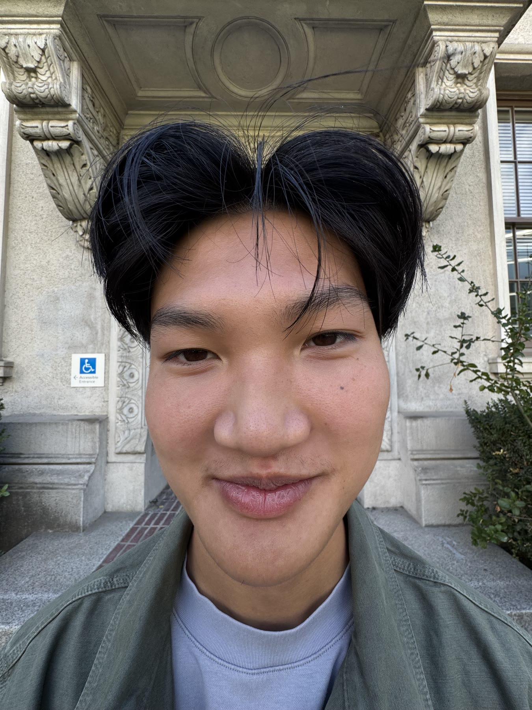
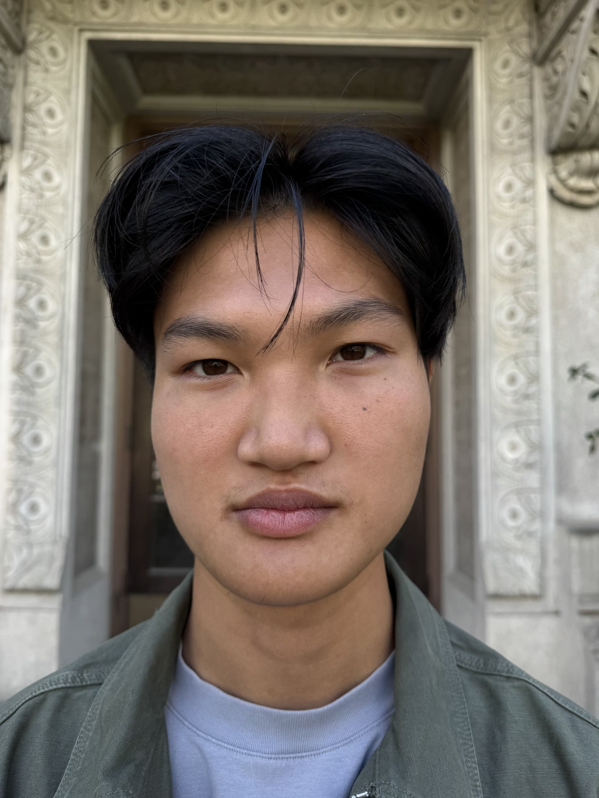
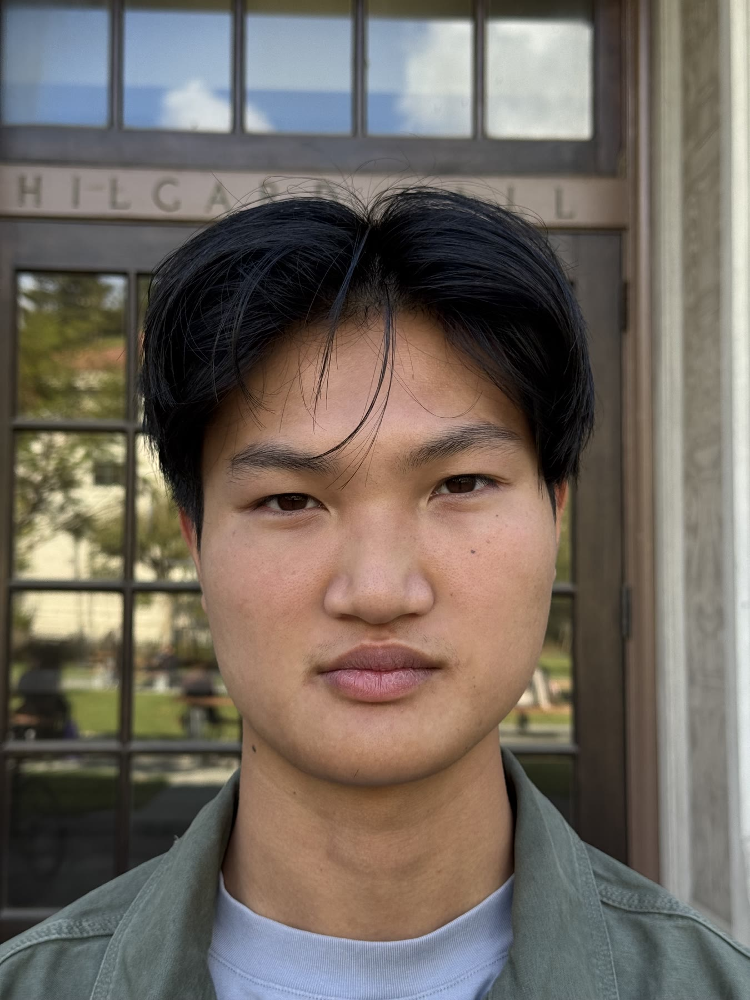
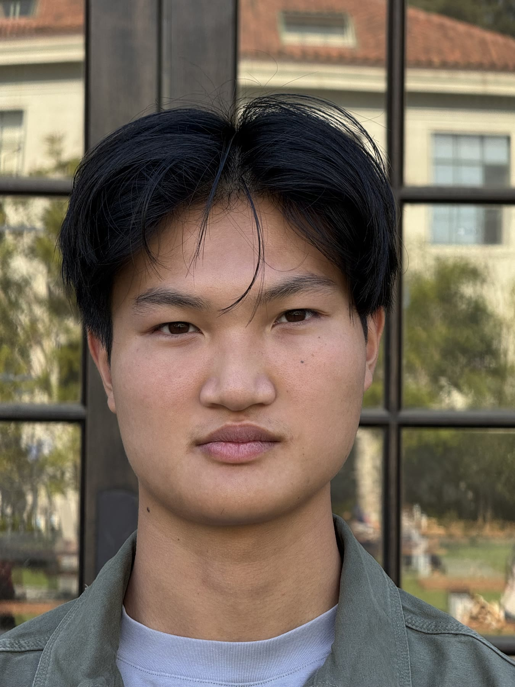

Selfie: The Wrong Way vs. The Right Way
From left to right: 0.5×, 1×, 2×, and 5×.




In the close-up photo, my face looks distorted because the camera is so close. As I move farther away and zoom in, my face looks flatter and more natural. The change in perspective comes from moving the camera, while zoom keeps my face about the same size.